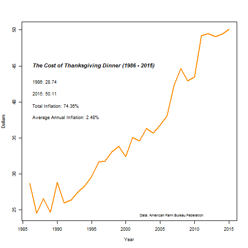

- The cost of a traditional Thanksgiving Dinner for 10 people has gone from 28.74 in 1986 to a whopping 50.11 in 2015.
- This is an a total price increase of 74.36% and an average annual inflation rate of 2.48%.
- The cost increased by 13.18% between 2010 and 2011, but only by 1.27% between 2011 and 2015.
- How much will the price increase next year? What about the next five years?